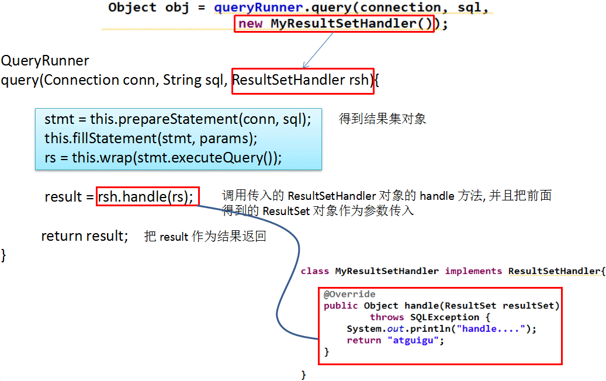

Apache—DBUtils简介
commons-dbutils 是 Apache 组织提供的一个开源 JDBC 工具类库，它是对JDBC的简单封装，学习成本极低，并且使用dbutils能极大简化jdbc编码的工作量，同时也不会影响程序的性能。
API介绍：
- org.apache.commons.dbutils.QueryRunner
- org.apache.commons.dbutils.ResultSetHandler
工具类
- org.apache.commons.dbutils.DbUtils、。
DbUtils类
DbUtils ：提供如关闭连接、装载JDBC驱动程序等常规工作的工具类，里面的所有方法都是静态的。主要方法如下：
- public static void close(…) throws java.sql.SQLException： DbUtils类提供了三个重载的关闭方法。这些方法检查所提供的参数是不是NULL，如果不是的话，它们就关闭Connection、Statement和ResultSet。
- public static void closeQuietly(…): 这一类方法不仅能在Connection、Statement和ResultSet为NULL情况下避免关闭，还能隐藏一些在程序中抛出的SQLEeception。
- public static void commitAndCloseQuietly(Connection conn)： 用来提交连接，然后关闭连接，并且在关闭连接时不抛出SQL异常。
- public static boolean loadDriver(java.lang.String driverClassName)：这一方法装载并注册JDBC驱动程序，如果成功就返回true。使用该方法，你不需要捕捉这个异常ClassNotFoundException。
QueryRunner类
该类简单化了SQL查询，它与ResultSetHandler组合在一起使用可以完成大部分的数据库操作，能够大大减少编码量。
QueryRunner类提供了两个构造方法：
- 默认的构造方法
- 需要一个 javax.sql.DataSource 来作参数的构造方法。
QueryRunner类的主要方法
- public Object query(Connection conn, String sql, Object[] params, ResultSetHandler rsh) throws SQLException：执行一个查询操作，在这个查询中，对象数组中的每个元素值被用来作为查询语句的置换参数。该方法会自行处理 PreparedStatement 和 ResultSet 的创建和关闭。
- public Object query(String sql, Object[] params, ResultSetHandler rsh) throws SQLException: 几乎与第一种方法一样；唯一的不同在于它不将数据库连接提供给方法，并且它是从提供给构造方法的数据源(DataSource) 或使用的setDataSource 方法中重新获得 Connection。
- public Object query(Connection conn, String sql, ResultSetHandler rsh) throws SQLException : 执行一个不需要置换参数的查询操作。
- public int update(Connection conn, String sql, Object[] params) throws SQLException:用来执行一个更新（插入、更新或删除）操作。
- public int update(Connection conn, String sql) throws SQLException：用来执行一个不需要置换参数的更新操作。
ResultSetHandler接口
该接口用于处理 java.sql.ResultSet，将数据按要求转换为另一种形式。
ResultSetHandler 接口提供了一个单独的方法：Object handle (java.sql.ResultSet .rs)。
ResultSetHandler 接口的实现类
- ArrayHandler：把结果集中的第一行数据转成对象数组。
- ArrayListHandler：把结果集中的每一行数据都转成一个数组，再存放到List中。
- BeanHandler：将结果集中的第一行数据封装到一个对应的JavaBean实例中。
- BeanListHandler：将结果集中的每一行数据都封装到一个对应的JavaBean实例中，存放到List里。
- ColumnListHandler：将结果集中某一列的数据存放到List中。
- KeyedHandler(name)：将结果集中的每一行数据都封装到一个Map里，再把这些map再存到一个map里，其key为指定的key。
- MapHandler：将结果集中的第一行数据封装到一个Map里，key是列名，value就是对应的值。
- MapListHandler：将结果集中的每一行数据都封装到一个Map里，然后再存放到List
